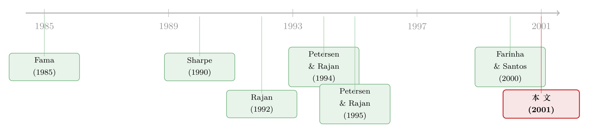

关系越久，越想说再见——一份挪威银行关系的「生存分析」
本文读的是 Ongena & Smith (2001, Journal of Financial Economics)：他们用挪威上市公司 1979–1995 年的银行关系面板，做了一次「生存分析」，发现一段银行关系存活得越久，反而越容易被终结——小、年轻、高杠杆这些「最依赖银行」的公司，恰恰把关系换得最勤。这个结论直接动摇了「公司会被银行锁死 (lock-in)」的主流叙事。
1 一个被讲了三十年的故事，和它的反面
先讲一个几乎所有公司金融教科书都会讲的故事。
银行和企业之间，最值钱的东西不是那笔贷款，而是关系。理由很顺：银行在一次次打交道里，慢慢摸清了这家公司的底细——它的现金流稳不稳、老板靠不靠谱、坏账能不能熬过去。这种「私有信息 (private information)」会随着时间越积越厚。于是，经济寒冬里，银行愿意先做一笔亏本的贷款，因为它相信这份亏损能在漫长的关系里慢慢赚回来。Diamond (1984, 1991)、Rajan (1992)、Boot 和 Thakor (1994)、von Thadden (1995) 都从理论上证明过这种双边、长期关系的价值。
故事讲到这儿，听上去全是好处。可它有一个阴暗的反面：同样是这份「越积越厚的私有信息」，反过来也能把客户锁死。别的银行看不懂你的底细，于是只有你的主办银行敢给你好价钱；而它一旦知道你跑不掉，就可以慢慢抽租。这就是所谓的「套牢成本 (holdup cost)」——Sharpe (1990)、Rajan (1992)、Petersen 和 Rajan (1995)、von Thadden (1998) 研究的正是这一面。
所以，关于「一段银行关系会怎样随时间演化」，理论给了两个完全相反的预言：
- 如果关系的价值随时间上升，或者公司真的被套牢了，那么终结关系的概率应该随时间下降——关系越老，越难分手。
- 如果关系的价值随时间衰减，而转换成本又没那么吓人，那么终结的概率应该随时间上升——关系越老，越容易分手。
接着，一个自然的问题是：到底哪一个对？这恰恰是过去三十年大家没法回答的问题。Petersen 和 Rajan (1994)、Berger 和 Udell (1995) 已经漂亮地证明了「关系越久，企业拿到的信贷越多、利率越低」，但他们用的美国小企业调查数据，只告诉你关系有多长，却不告诉你关系是什么时候、在什么情况下被终结的。少了「终结」这一笔，整张账就算不平——你只看见活着的关系，看不见死去的关系。
本文要补的，正是这缺失的一半。
2 为什么是挪威？
要回答上面的问题，你需要一个能把每一段银行关系「从生到死」完整记录下来的数据源。作者找到了一个意想不到的地方：挪威。
挪威为什么是个好实验场？两个理由。第一，它是个银行主导的金融体系——银行供给了全国 90% 的商业债务（非金融企业从金融机构借的所有钱）。如果说关系在哪里最重要，那一定是在这种地方。第二，也是最关键的一步：奥斯陆证券交易所 (Oslo Stock Exchange, OSE) 的上市规则要求每家公司每年申报它的主办银行，最多报四家。这意味着，只要翻开 OSE 每年出版的 Kierulf's Handbook，你就能逐年看到：哪家公司今年和哪家银行打交道，去年的某家银行什么时候从名单上消失，又被哪家新银行替代。
这是一个被监管「免费」生产出来的关系面板。公司一旦把某家银行从主办名单上划掉、或换成新的一家，作者就把它记为一次关系终结；一段关系的存续期 (duration)，就是这家银行连续出现在名单上、直到被划掉之前的年数。
数据从 1979 横跨到 1995，平均每年覆盖 111 家公司，占 OSE 全部非银行上市公司的 95%。在挪威，关系也确实集中：平均每年 74% 的公司只有一家主办银行，17% 有两家，7% 有三家，只有 2% 报满四家；而 75% 的公司都和挪威最大的两家商业银行（Kreditkassen 或 Den norske Bank）之一打交道。
数据落地之后，先看一眼最朴素的事实。整个样本里有 419 个「公司–银行」观测，观测到的关系存续期中位数只有 4 年，平均 5.1 年。差不多 40% 的关系活不过两年，86% 在第十年之前就结束了，只有 6.2% 能熬过 16 年的样本上限。
第一眼看上去，结论似乎已经写在脸上了：银行关系短命。但这里藏着一个陷阱，恰恰是这篇论文方法论上最讲究的地方。
3 真正的难题：你只看见了一半的关系
问题出在截断 (censoring)。
想象一段 1975 年就开始、到 1990 年还活着的关系。你的数据从 1979 年才开始记录，所以你看到的「存续期」是从 1979 算起的——这叫左截断 (left censoring)，你低估了它真实的年龄。再想象一段 1992 年开始、到 1995 年样本结束时仍在延续的关系——你永远看不到它的结局，这叫右截断 (right censoring)。
截断会系统性地扭曲你对「关系到底有多长」的判断。证据就在数据里：那些 1979 年之前就开始的关系（共 146 个），中位数存续期是 6 年、均值 7.3 年，其中 17.8% 一直延续到 1995 年之后；而 1979 年后才开始的关系（273 个），中位数只有 2 年。同样一批公司，仅仅因为「我们什么时候开始/停止观察」，存续期就能差出三倍。
于是真正关键的一步出现了：不能直接拿观测到的存续期去做普通回归，必须用能处理截断的工具。这就是为什么本文要请出生存分析 (survival analysis)，或者说风险函数 (hazard function) 这套来自生物统计、由 Cox (1972)、Kaplan 和 Meier (1958)、Heckman 和 Singer (1984) 发展起来的方法。
4 风险函数：把「会不会分手」翻译成一条曲线
这一节稍微有点数学，但它是全文的引擎，值得一步步看清楚。
我们关心的是一个随机时长 \(T\)：一段关系从开始到被终结，要熬过多长。描述 \(T\) 的第一种方式是生存函数 (survivor function)：
$$ S(t) = P(T \ge t), $$
它给出「关系至少活到 \(t\) 时刻」的概率，等于 \(1\) 减去 \(T\) 的累积分布函数。
但更有用的是第二种方式——风险函数。它问的不是「能活多久」，而是「已经活到了 \(t\)，那么下一瞬间分手的概率有多大」。形式上：
$$ \lambda(t) = \lim_{\Delta t \to 0} \frac{P(t \le T < t+\Delta t \mid T \ge t)}{\Delta t} = -\frac{d \log S(t)}{dt} = \frac{f(t)}{S(t)}, $$
其中 \(f(t)\) 是 \(T\) 的密度函数。注意那个条件 \(T \ge t\)：风险函数是「条件于已经存活到 \(t\)」的瞬时终结率。这正好对应我们的经济问题。
于是，本文那个被讲了三十年的争论，就被干净利落地翻译成了一句关于斜率的话：
- 如果 \(\lambda(t)\) 随 \(t\) 递增，叫正存续依赖 (positive duration dependence)——关系越老越容易死，对应「关系价值衰减」。
- 如果 \(\lambda(t)\) 随 \(t\) 递减，叫负存续依赖——关系越老越牢，对应「锁定/套牢」。
整篇论文，最后就压在这条曲线是往上走还是往下走。
接着，为了把公司特征塞进来，本文采用了生存分析里最常用的比例风险设定 (proportional hazard specification)：
这个设定的妙处在于它把两件事拆开了：\(\lambda_0(t)\) 单管「时间本身的效应」（存续依赖的方向），\(\exp(\beta' X_t)\) 单管「公司长什么样的效应」。\(\beta\) 里某个分量为正，就意味着这个特征提高了终结的瞬时概率，也就是让关系更短。作者用了好几种对 \(\lambda_0(t)\) 的设定（包括 Cox 的半参数、以及 Weibull 等参数形式）来确保结论不是被某个分布假设硬凑出来的。
5 反转：最依赖银行的公司，分手最快
现在揭晓那条曲线的方向。
基线风险 \(\lambda_0(t)\) 是随时间上升的——正存续依赖。 也就是说，一段关系存活得越久，下一年被终结的概率反而越高。翻译成经济语言：银行关系的价值是随时间衰减的，而不是越陈越香。这一刀，直接砍在了「公司会被套牢」的叙事上。
但真正反直觉的，是横截面那一半。作者构造了七个刻画「公司有多依赖银行」的特征——Ln Sales（规模，Fama 1985、Diamond 都认为小公司信息问题更重）、Age（年龄）、Profitability（经营利润/资产，Titman 和 Wessels 1988 指出高盈利公司更少依赖外部债）、Tobin's Q（成长机会与信息不对称的代理）、Leverage（账面债务占比）、Multiple Relationships（是否多家银行的虚拟变量）、Ownership Concentration（前十大股东持股，作为替代性监督机制的代理）。
结果是：小、年轻、高杠杆的公司，关系最短；高盈利的公司，关系也更短。
停下来想一想这有多别扭。理论一直告诉我们，正是这些小、年轻、高杠杆的公司——信息最不透明、最依赖银行融资的那一批——最该牢牢抱住一段长期关系，也最容易被银行套牢。可数据说，恰恰是它们，把关系换得最勤、终结得最快。换句话说，那些「理应被锁死」的公司，反而走得最潇洒。
那它们是被银行赶走的吗？作者特意排查了这条退路：这些公司的离开，并不能用银行的放贷能力受限、银行合并、或银行陷入困境来解释。它们不是被赶走的，是自己走的。
一个数据背景值得记住：样本期正好罩住了 1986–1988 年的挪威银行业危机与金融自由化。1984 年起利率上限和信贷管制被取消，贷款量与坏账同时暴涨（Kaen 和 Michalsen 1997 记录：贷款量 1985 年增 37.5%、1986 年增 23.4%，商业贷款损失率在 1984–1987 翻了两番）。样本里 40%（21 家）的银行在期间合并过——作者默认合并不构成关系中断，并在稳健性里专门检验了这一处理。
最后是「竞争」这一层的双重效应，也是全文收尾最漂亮的一笔。多家银行 (multiple-bank) 的公司，比单一银行的公司更早终结关系——这很自然，多一个备胎，转换成本就低，套牢威胁就轻。但作者进一步发现：这些多银行公司，其实是在频繁更换那些较新的关系，同时死死守住一段最老的关系。
于是反转之上还有反转：长期关系并非对谁都是负担，它恰恰对那些不会被某一家垄断银行可信地套牢的公司最有价值。你只有在不怕被勒索的前提下，才敢放心地经营一段长久的关系。这就把「关系价值」和「套牢威胁」这两股相反的力，统一进了同一个故事里。
6 文献脉络
把这篇论文放回它的坐标系，能看得更清楚。
最早，是 Fama (1985) 那句著名的追问「银行到底有什么不一样？」，以及 Diamond (1984) 的委托监督 (delegated monitoring) 理论，奠定了「银行=信息生产者」的底色。接着，理论分成了对峙的两支：一支讲关系的价值（Rajan 1992、Boot 和 Thakor 1994、von Thadden 1995），一支讲关系的阴暗面——套牢（Sharpe 1990、Greenbaum 等 1989、Rajan 1992）。
然后，实证登场。Petersen 和 Rajan (1994) 与 Berger 和 Udell (1995) 用美国小企业数据证明了「关系越久越划算」；Petersen 和 Rajan (1995) 又把信贷市场竞争与关系联系起来。但这批数据都缺了「终结」这一环。

本文的位置，就在于第一次用一个完整记录起止的关系面板，把「关系如何随时间演化、何时被终结」这个一直悬空的问题落了地，并给出一个反主流的答案。和它最近的同时代工作是 Farinha 和 Santos (2000)——同样用生存分析研究银行转换，但聚焦于「从单一银行走向多银行」的选择，其结论（转向多银行的概率随存续期、杠杆、成长性上升）与本文相互印证。
值得一提的是，这对作者后来沿着挪威这条线继续深挖：在《银行成片倒下，公司却几乎毫发无伤——挪威危机里的一个反常识》里，他们检验了银行陷入困境对企业的冲击（参见这篇）；关于「关系到底值多少钱」的另一端证据，也可参见韩国银行业危机的估价研究（《银行受了伤，谁替它疼？》）。而把关系算进一国信贷总账的结构化尝试，则见《银行为什么舍得先亏本拉客？》。
7 评论与延伸（Q&A + 研究方向）
(a) 几个可能的疑问
Q：「关系终结的概率随时间上升」，凭什么就推出「价值在衰减」、而不是别的？
严格说，这是一个联合推断：正存续依赖本身只是统计事实，作者把它读作「价值衰减」，靠的是排除了竞争性解释——不是银行把客户赶走（已控制银行能力受限、合并、困境），也不是机械的样本截断（用了截断稳健估计）。但要注意，作者自己也承认：数据看不到每段关系内部的合同条件、利率、非贷款服务，所以「价值衰减」是从可观测的终结行为反推出来的，而非直接测得。
Q：观测到的存续期中位数才 4 年，是不是说明挪威的关系特别脆弱？
不能直接这么读。
4年只是观测到的中位数，被左/右截断同时压低了。证据是：1979 年前就存在的关系，中位数有6年、17.8%延续到样本结束之后。这正是本文要用风险函数而非简单均值的全部理由——朴素统计会把「我们观察的窗口太短」误读成「关系太短命」。
Q：小、年轻、高杠杆的公司关系最短，会不会只是因为这些公司本身更容易倒闭、退市？
这是最该担心的混淆。作者的处理是把退市/右截断显式建模进生存框架（关系结束 ≠ 公司消失），并区分「公司主动换银行」与「被动出局」。他们也强调这些公司不是因为银行端的原因（合并、困境）被迫离开。不过，公司层面的生存与关系层面的生存仍可能纠缠，这是识别上最薄弱的一环。
Q：多银行公司「频繁换新关系、死守一段老关系」，会不会只是统计假象？
有这个风险。因为每个「公司–银行」对算一个观测，多银行公司天然贡献更多观测、也更容易产生终结，样本里
44.3%的观测来自多银行公司。作者意识到了这点，并把Multiple Relationships作为显式控制变量。但「同一家公司内部不同关系的异质性」本质上需要关系层面的合同数据，而这正是数据所缺的。
Q：这套挪威结论，能外推到美国或别的银行主导体系吗？
要小心。挪威是高度集中（两家银行覆盖
75%公司）、银行供给90%商业债的特殊环境，又恰好穿过一场银行危机与自由化。这些既是优点（关系最重要的地方），也是局限（结论可能被这段特殊历史驱动）。作者把样本期的危机当作背景而非冲击来用，留给后人一个自然的再检验空间。
Q：和「公司选择几家银行」这类文献是什么关系？
互补。Detragiache 等 (2000)、Houston 和 James (1996)、Ongena 和 Smith (2000) 研究的是横截面上公司选几家银行；本文研究的是时间维度上一段关系如何终结。Farinha 和 Santos (2000) 则把两者接起来——关系存续越久，越可能从单一走向多家。
(b) 几个可能的研究问题与提案
- 把生存分析搬到美国公司债的承销关系上。
- 【经济故事】公司和它的债券承销商之间，同样存在「关系资本」与「套牢」的张力。一家公司多久会换一次主承销商？换承销商的瞬时风险是随关系递增还是递减？这能把本文的「关系会衰减」命题，从贷款搬到债券一级市场。
-
【可行性】高。Mergent FISD / SDC 有逐笔发行与承销商身份，能精确还原承销关系的起止；风险函数现成。难点是区分「公司主动换」与「承销商退出/被并购」，思路与本文如出一辙。
-
外资银行进入，会缩短还是延长本地关系？
- 【经济故事】外资银行通常缺乏本地软信息，理论上更难套牢客户，也更可能只做「价格战」式的短关系。一个市场对外资开放后，本地企业–银行关系的存续期分布会怎么移动？这把本文与「外资持有人」这条线接上了。
-
【可行性】中。需要一个外资准入有明确时点的市场（如某些新兴市场的银行业开放），用准入作为冲击做差分；关系数据是瓶颈，但部分国家的征信局/监管申报可得。
-
关系存续期与公司债二级市场流动性。
- 【经济故事】一家公司若与银行维持长期关系，其信息环境更「私有化」，公开市场上的投资者反而更难定价——这是否会反映在它发行的债券的买卖价差与流动性上？把私有关系的「年龄」与公开市场流动性挂钩，是一个干净的信息经济学检验。
-
【可行性】中。需要把银行关系数据（如某国上市公司申报）与 TRACE 类成交数据匹配，跨数据源匹配是主要成本，但识别逻辑清晰。
-
用本文框架重估「关系危机」中的存续依赖是否变号。
- 【经济故事】在正常时期关系价值衰减（正存续依赖），但在银行危机中，转换成本可能骤升、套牢威胁反而加重，存续依赖会不会翻转？挪威 1986–1988 正好提供了一段危机窗口。
- 【可行性】高。直接在本文同一数据上做分时期/时变系数的风险函数即可，不需要新数据，只需更精细的设定。
8 我的判断
这篇论文的贡献，不在于发明了什么新方法，而在于找对了数据、问对了问题。它最漂亮的地方是把一个被理论吵了三十年、却因为「看不见关系的死亡」而无法实证的争论，干净地翻译成了一条风险曲线的斜率问题，然后用一个被监管「免费」生产出来的完整面板，给出了一个反主流的答案：关系会衰减，公司不会被锁死，而长期关系恰恰属于那些不怕被套牢的人。这个「双重竞争效应」的收尾，是把对立理论捏成一个连贯故事的范例。
对识别，我的担心集中在两处。其一是关系生存与公司生存的纠缠：小、年轻、高杠杆公司关系最短这个核心发现，必须排干净「它们本身更易出局」的混淆，而数据在公司层面与关系层面的边界并不总是清晰。其二是外部效度：挪威的高集中度、银行危机与自由化，既成就了这个理想实验场，也让人无法确定结论有多少是被那段特殊历史驱动的。
后续我最想看到的，是把这套「关系的生与死」框架，接到有合同细节的数据上——利率、抵押、非贷款服务。本文最大的遗憾正是只能从「终结行为」反推价值，看不到关系内部的价格。一旦能同时观测到关系的年龄和它的定价，「价值随时间衰减」这句话，就能从一个推断，变成一个可以直接称重的事实。
参考文献
Berger, A.N., Udell, G.F. (1995). Relationship lending and lines of credit in small firm finance. Journal of Business 68, 351–381.
Boot, A.W.A., Thakor, A.V. (1994). Moral hazard and secured lending in an infinitely repeated credit market game. International Economic Review 35, 899–920.
Cox, D. (1972). Regression models and life tables. Journal of the Royal Statistical Society 24, 187–201.
Diamond, D. (1984). Financial intermediation and delegated monitoring. Review of Economic Studies 51, 393–414.
Fama, E.F. (1985). What's different about banks? Journal of Monetary Economics 15, 5–29.
Farinha, L.A., Santos, J.A.C. (2000). Switching from single to multiple bank lending relationships: determinants and implications. Working Paper, Bank for International Settlements.
Heckman, J.J., Singer, B. (1984). Econometric duration analysis. Journal of Econometrics 24, 63–132.
Ongena, S., Smith, D.C. (2001). The duration of bank relationships. Journal of Financial Economics 61, 449–475.
Petersen, M.A., Rajan, R.G. (1994). The benefits of lending relationships: evidence from small business data. Journal of Finance 49, 3–37.
Petersen, M.A., Rajan, R.G. (1995). The effect of credit market competition on lending relationships. Quarterly Journal of Economics 110, 407–443.
Rajan, R.G. (1992). Insiders and outsiders: the choice between informed and arm's-length debt. Journal of Finance 47, 1367–1400.
Sharpe, S.A. (1990). Asymmetric information, bank lending and implicit contracts: a stylized model of customer relationships. Journal of Finance 45, 1069–1087.
Titman, S., Wessels, R. (1988). The determinants of capital structure choice. Journal of Finance 43, 1–19.
von Thadden, E.L. (1995). Long-term contracts, short-term investment, and monitoring. Review of Economic Studies 62, 557–575.